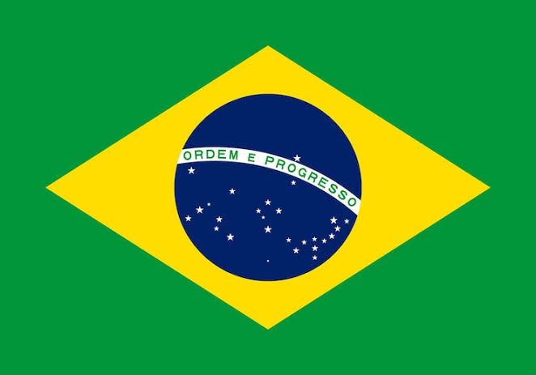

Lucas Mendes de Araújo
Sobre Mim
Meu nome é Lucas, nasci em Campinas e atualmente moro em uma cidade da região de Campinas chamada Monte Mor, interior do estado de São Paulo. Sou estudante de Desenvolvimento de Software na BYU-Pathway World Wide em português desde janeiro de 2026, agora estou no bloco 5 aprendendo mais sobre fundamentos da web dinâmica com HTML, CSS e JS. Atualmente sou operador de produção em uma multinacional chamada Novonesis, uma empresa de biossoluções para melhorar o mundo, nascida em 2024 da fusão entre as dinamarquesas Novozymes e Chr. Hansen. Sou missionário retornado, e meu período de missão foi do dia 21 de agosto de 2023 até o dia 9 de setembro de 2025 na Missão Brasil Vitória, essa missão tem uma marcação geográfica que pega todo o estado do Espírito Santo, uma parte do Rio de Janeiro, Bahia e Minas Gerais.

Monte Mor, São Paulo - Brasil

Monte Mor é um município paulista da Região Metropolitana de Campinas, com cerca de 67.800 habitantes. A cidade fica a aproximadamente 120 km da capital e a apenas 17 km do Aeroporto de Viracopos. Tem forte vocação industrial e logística.